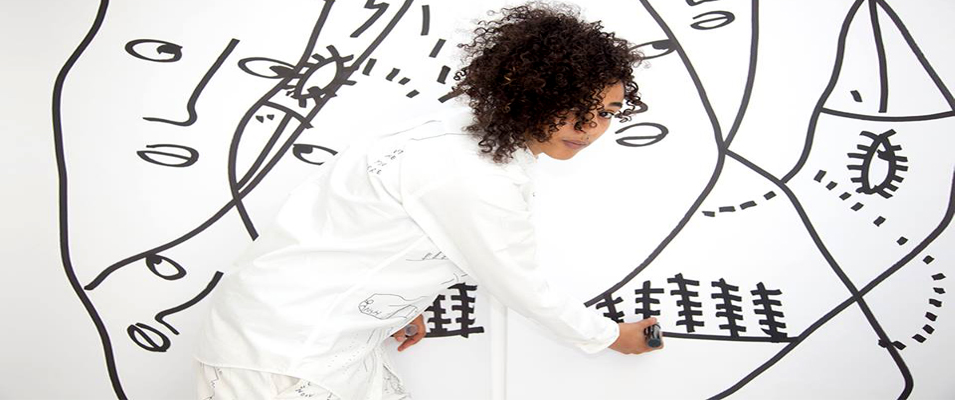

Portland’s Wildfang isn’t simply just a brand, but a growing movement for women who do not fit the mold of what society may deem them. For a long time fashion has fallen short in regards to the outdated gender binary. Tomboys were either subjected to having to shop in the men’s section, and wear oversized, ill fitting clothing not made for their bodies, or wear clothes that didn’t speak to their identity or fashion preference, Then comes Wildfang...[read more]
IN ARTS:  Shantell Martin
For artist Shantell Martin, the world is a canvas. The London born, and Brooklyn based artist is best known for her clean and intricate black and white stream of consciousness illustrations flowing onto walls, canvases, objects, clothing, and any blank surface surrounding her, including skin. Making art appears to be a seamless and inherent skill for Martin...[read more]IN MUSIC: Queen Tut
Seshat Queen Tut crowned herself well before she began performing for the public, but it didn’t take long for the confident emcee to gain loyal subjects. Tut made a splash in her debut feature, inviting listeners to join her artistic journey on the opening verse of AR Wesley’s “Drug Flow RMX.” Since then she’s laced her royal rhymes on fellow Milwaukee musicians’...[read more]
IN FASHION: When it comes to creativity, for Rob Hill and Slim Jeff it’s a family affair. The cousins, based out of Los Angeles, combined their love for art, music and fashion and launched NDSLA, which to them translates to this idea of independent stars embarking on a journey of growth. Both of those concepts reign true, for they have experienced a lot of buzz and accolades...[read more]
IN REVIEWS: Modern Day Threads Fashion Show
Fashion lovers gathered at Avalon Park for Jinspired's Modern Day Thread's fashion show. The hodge podged fashion preview featured aspiring and locally established fashion designers, whose designs all varied in color and shape. Couplets of black chairs outlined an Oreo colored runway. Towering behind the black and white carpet were three white walls...[read more]Riot Festival 2015
Check out our recap of Riot Festival 2015 in Chicago! Riot Fest is unlike any other concert festival experience. Where else can you get great music acts of many genres, carnival rides, an art inspired putt putt field, a freak show, a hot air balloon, and a mud bath all in one place? The tri-city music festival celebrated it’s tenth year on new grounds. ...[read more]AT THE BLOG: Check out our AMFM blog content too!
We have a page just for quick arts, music and fashion snippets and projects from artists we've featured, and new artists and projects from BLAX, Daryn Alexus and SoloSam and more! We've got some mini Q&A's, artist profiles, submissions from artists, musicians and designers, and some content we feature over on our Tumblr. If you like short and sweet and images, check it out...[read more]IN EVENTS: